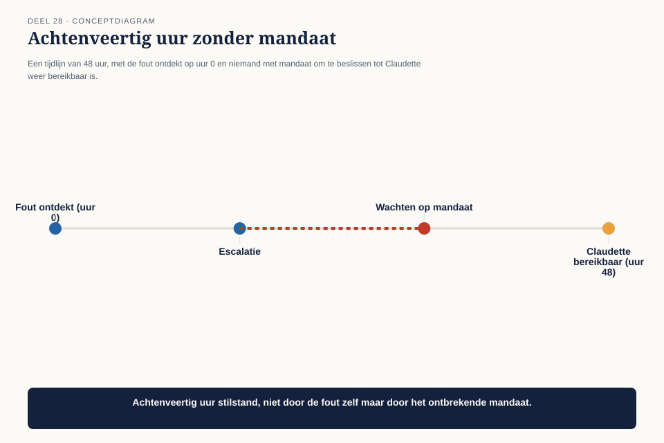
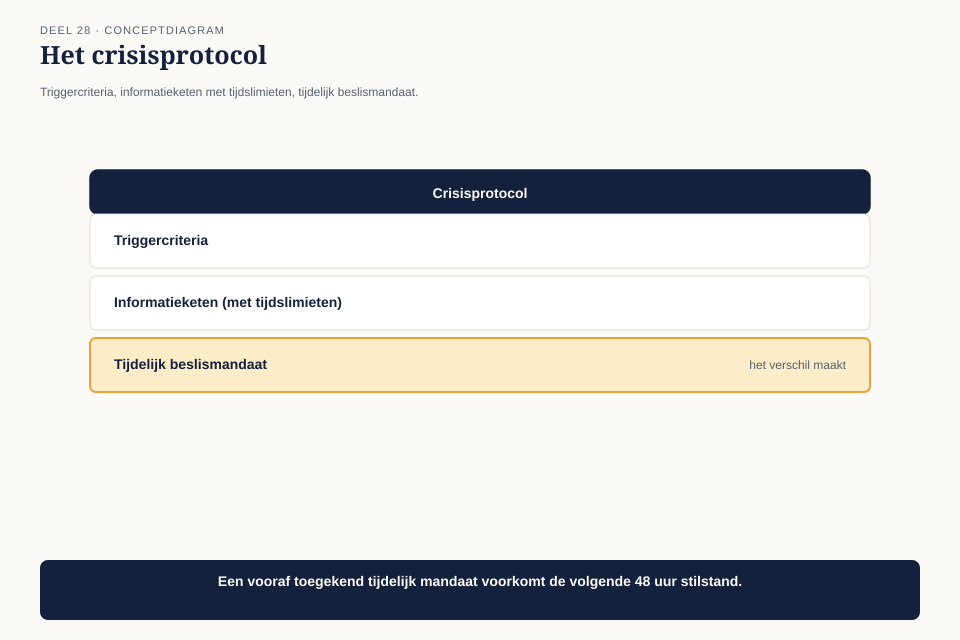
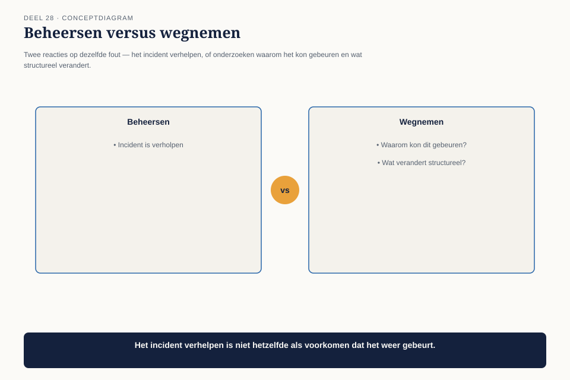
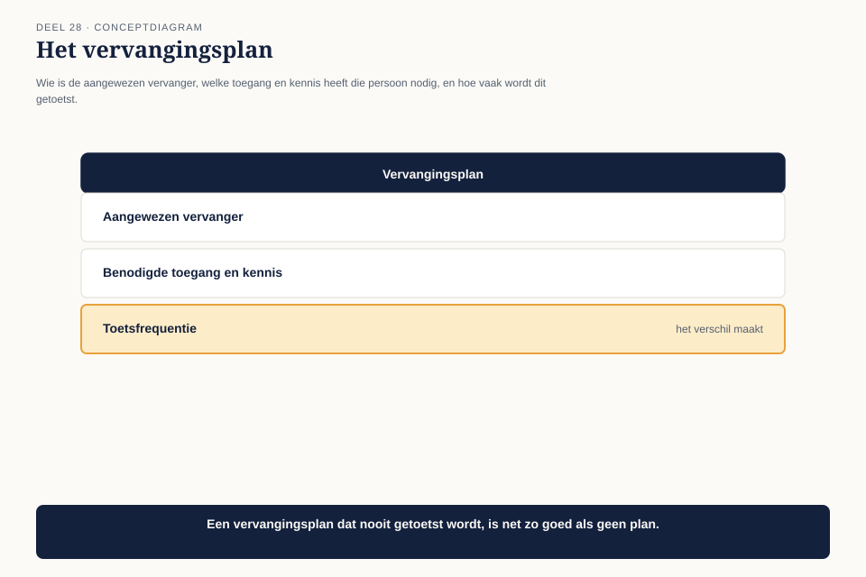

Deel 28 — Risicobeheer en continuïteit op praktijkschaal
Niveau 3 — Board-gereedheid en praktijkleiderschap | Deelnemersreader BTABoK-cursus, Ductus
28.1 Waar dit deel over gaat
Deel 16 leerde risico’s van een programma optellen tot een dekkingsgraad. Dit deel behandelt twee dingen die pas op praktijkschaal echt zichtbaar worden: hoe een praktijk reageert wanneer een risico daadwerkelijk optreedt, en wat er gebeurt als de praktijk zelf — of de leiding ervan — plotseling wegvalt.
Aan het eind van dit deel kun je:
- een crisisprotocol opstellen dat vastlegt wie binnen welke tijd wordt geïnformeerd en wie beslist als een risico zich voordoet;
- het onderscheid maken tussen een incident beheersen en de onderliggende oorzaak wegnemen;
- een vervangingsplan opstellen dat continuïteit van de praktijk waarborgt, los van één persoon.
28.2 Twee dagen onbereikbaar, midden in een incident
Achttien maanden in de Wtp-overgang gebeurt wat de architectuur-dekkingsgraad uit deel 16 altijd al aangaf als mogelijk: in de werkstroom “Herberekening” wordt, drie weken voor een wettelijke rapportagedeadline, een fout ontdekt in de berekeningslogica voor een specifieke groep deelnemers — precies het ongedekte deel van het risico dat nooit expliciet was afgedekt.
Op het moment dat de fout wordt ontdekt, is Claudette twee dagen onbereikbaar. Er is geen vastgelegde vervanger, geen protocol voor wie in haar afwezigheid mag beslissen, en de praktijk — negen architecten sterk — weet niet wie de eindverantwoordelijkheid overneemt.

De fout wordt uiteindelijk op tijd opgelost, maar met onnodige vertraging — niet door de complexiteit van de fout zelf, maar door de achtenveertig uur waarin niemand wist wie mocht beslissen.
28.3 Het crisisprotocol
De eerste competentie is een instrument dat vastlegt wat er moet gebeuren zodra een risico zich daadwerkelijk voordoet, vóórdat het zover is — dezelfde discipline als het opdrachtblad en de mentorafspraak, nu toegepast op crisissituaties.

| Veld | Inhoud |
|---|---|
| Triggercriteria | wanneer geldt een gebeurtenis als crisis (bijvoorbeeld: een fout die een wettelijke deadline of een groep deelnemers direct raakt) |
| Informatieketen | wie wordt binnen welke tijd geïnformeerd — de praktijkleiding, Bart Hoekstra, eventueel de raad van bestuur |
| Tijdelijk beslismandaat | wie mag beslissen als de praktijkleiding niet bereikbaar is, en binnen welke grenzen |
| Afsluitcriterium | wanneer geldt de crisis als beëindigd, en wie bevestigt dat |
Bij Wtp had een vooraf vastgelegd tijdelijk beslismandaat de achtenveertig uur vertraging voorkomen: een senior architect (uit de praktijkladder van deel 23) had, binnen vooraf afgesproken grenzen, de eerste beheersmaatregelen kunnen starten zonder op Claudette te wachten.
28.4 Incident beheersen versus oorzaak wegnemen
De tweede competentie waarschuwt tegen een veelvoorkomende fout na een crisis: het incident is opgelost, dus het probleem wordt als afgesloten beschouwd, terwijl de onderliggende oorzaak blijft bestaan.

Bij Wtp wordt de fout in de berekeningslogica binnen de deadline gecorrigeerd — het incident is beheerst. Maar de onderliggende oorzaak — dat dit specifieke risico nooit expliciet was afgedekt in de dekkingsgraad-analyse van deel 16 — blijft bestaan totdat iemand expliciet de vraag stelt: welke andere ongedekte risico’s uit het register verdienen, na dit voorval, alsnog prioriteit?
De regel: elke crisis eindigt met een expliciete vraag aan het risicoregister, niet alleen met een opgeloste fout. Dit is dezelfde discipline als het batenrealisatieplan uit deel 15 — een gebeurtenis is pas volledig verwerkt als de les ervan is teruggekoppeld naar het instrument dat de volgende keer scherper had kunnen waarschuwen.
28.5 Het vervangingsplan
De derde competentie behandelt de kwetsbaarheid die de crisis blootlegde: de praktijk had, na twee jaar, nog altijd geen antwoord op de vraag wat er gebeurt als Claudette zelf wegvalt — ziekte, vertrek, of gewoon twee dagen onbereikbaar tijdens een conferentie.

Het instrument is een directe toepassing van de legacytriage-logica uit deel 9, nu op een persoon in plaats van een systeem: waar zit kritieke kennis geconcentreerd bij één persoon, zonder back-up? Claudette identificeert zichzelf als precies zo’n knelpunt — enige houder van het volledige overzicht over de vijf werkstromen, het governancemodel, en de relatie met de raad van bestuur.
| Veld | Inhoud |
|---|---|
| Aangewezen vervanger | een senior architect uit de praktijkladder, vooraf gekozen en akkoord |
| Toegang | tot het gedeelde besluitenlogboek, de portefeuillekaart, het crisisprotocol |
| Kennisoverdracht | een kwartaalmoment waarop de vervanger wordt bijgepraat over de actuele stand — gekoppeld aan hetzelfde ritme als de roadmap (deel 19) |
| Toetsmoment | eenmaal per jaar daadwerkelijk testen: laat de vervanger een kwartaalrapportage voorbereiden, ook als Claudette beschikbaar is |
Het laatste veld is waar de meeste vervangingsplannen tekortschieten: een plan dat nooit wordt getoetst, is een document, geen werkende voorziening.
28.6 Terug naar de crisis
Met het crisisprotocol en het vervangingsplan op hun plek, ondergaat de praktijk zes maanden later een vergelijkbare test — ditmaal gepland, als oefening: Claudette is een dag “onbereikbaar” terwijl de aangewezen vervanger een kleinere, gesimuleerde crisis afhandelt. De informatieketen werkt binnen de afgesproken tijden, en het beslismandaat wordt correct toegepast. Waar de eerste crisis achtenveertig uur vertraging kostte, kost de geoefende versie minder dan drie uur.
28.7 Kernbegrippen
| Begrip | Betekenis in deze cursus |
|---|---|
| Crisisprotocol | triggercriteria, informatieketen met tijdslimieten, tijdelijk beslismandaat, afsluitcriterium |
| Incident beheersen versus oorzaak wegnemen | een crisis eindigt niet bij de oplossing van het incident, maar bij een expliciete terugkoppeling naar het risicoregister |
| Vervangingsplan | de legacytriage-logica toegepast op een persoon: waar zit kritieke kennis zonder back-up, en is dat getoetst? |
Volgende deel: deel 29 — Gedragscode voor senior architecten. Wat doe je als eerlijke rapportage en politieke druk met elkaar botsen op het hoogste niveau?